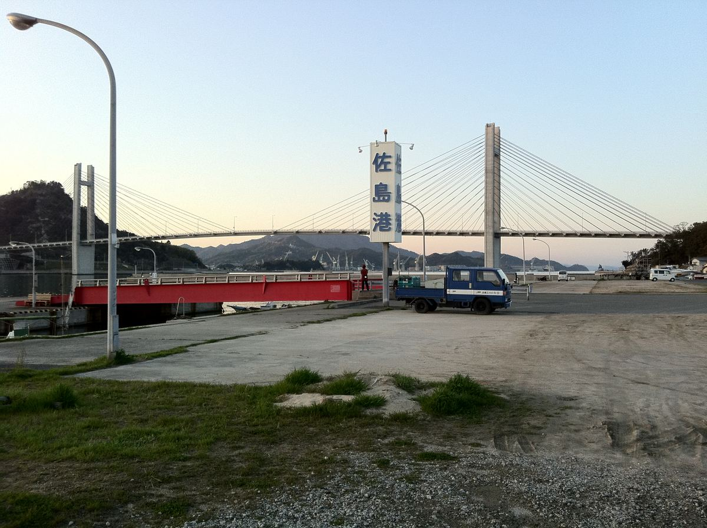
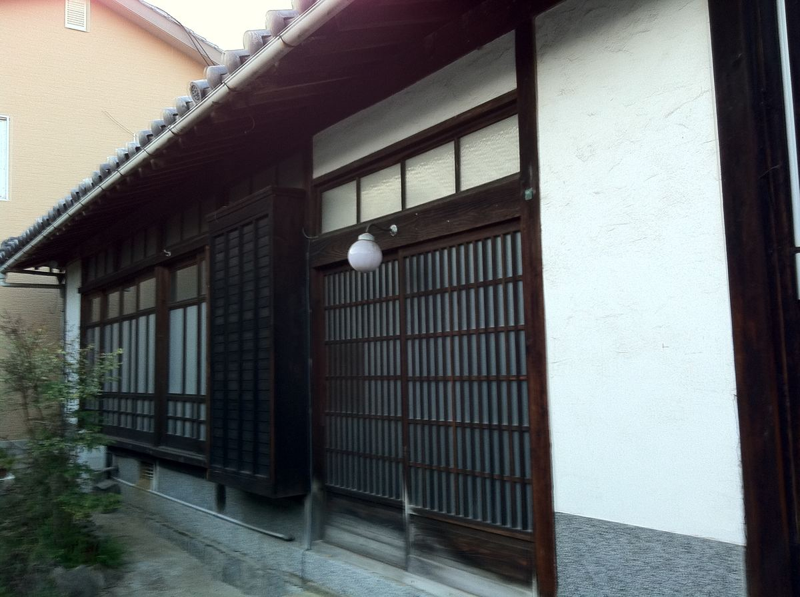
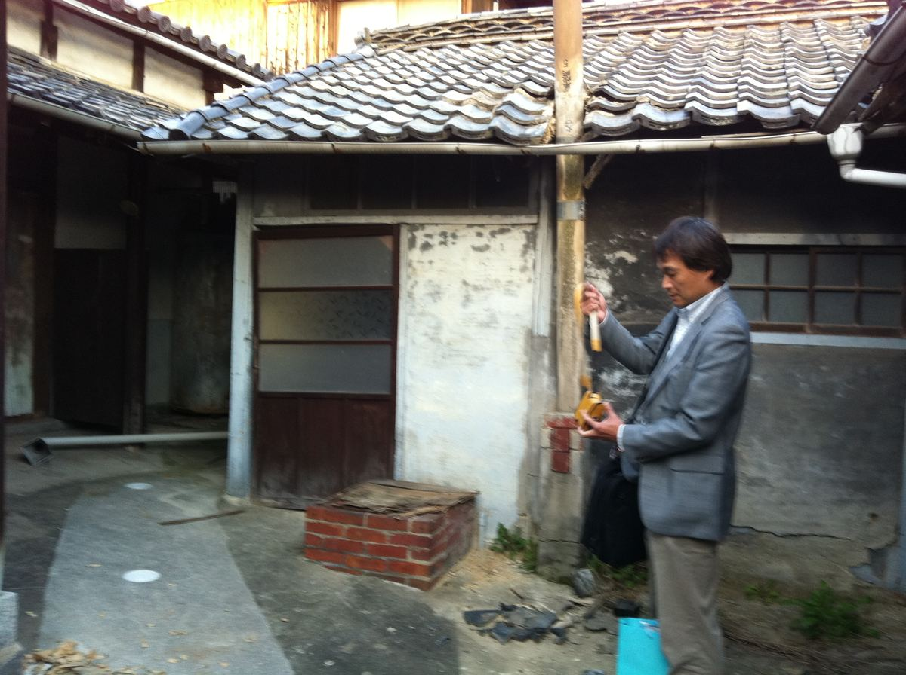
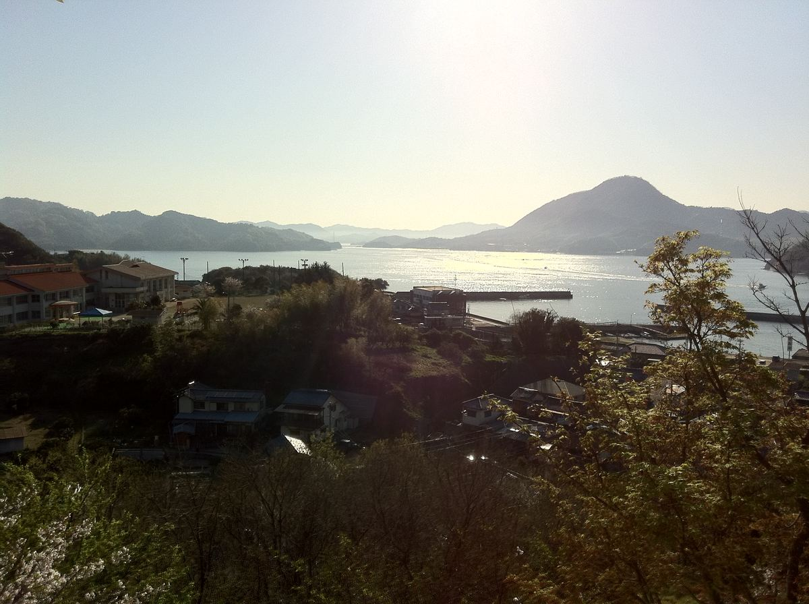
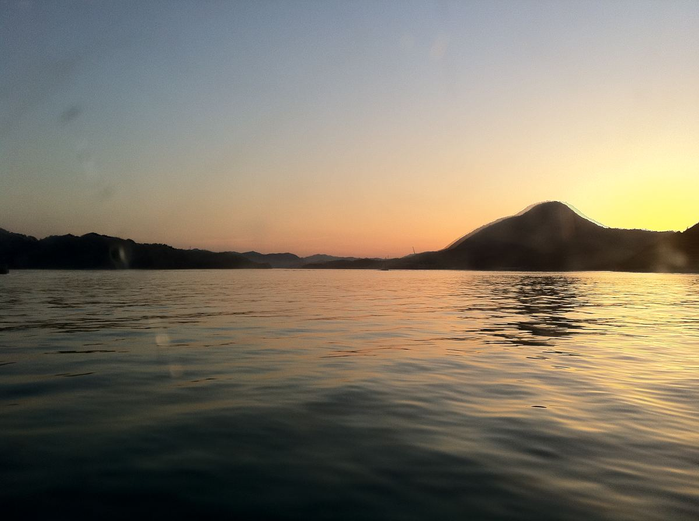
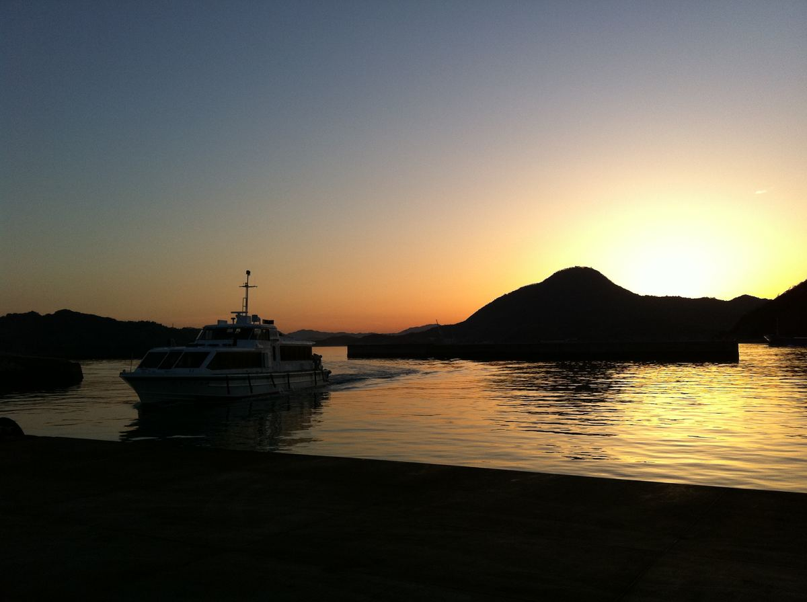
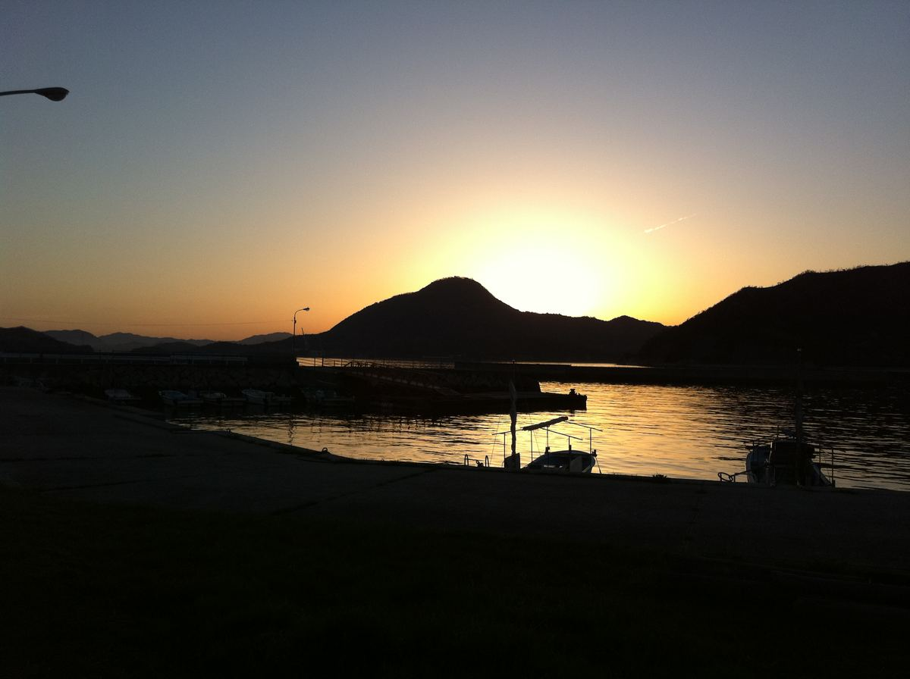

古民家再生の記録
はじまり
ありふれた空き家問題がはじまりでした。
2006年、引退後は汐見の家でのんびり暮らすつもりだった伯父が亡くなりました。
メンテナンスする人が居なくなった家は次第に傷み始め、2011年に島の方から長屋門の瓦が路地に落ちて危ないと母に連絡がありました。3人兄妹の遺された1人、78歳の母に汐見をどうするかが委ねられました。
母と私たち姉弟４人、誰にも汐見の家を維持する余力は無く、幸い近隣に倉庫として使おうかと言う方が現れたので、お譲りする話が進みました。
母方という事もあり、佐島を訪れることは稀でした。それでも皆、汐見の家が無くなるのはとても淋しかったので、最後に予定を合わせて家にお別れをしに行きました。
新潟、ロンドン、東京、福岡、それぞれの土地で暮らす家族の都合がピタリと合い、2012年4月、久方ぶりに佐島に集合しました。私自身にとっては30年振りの訪問でした。
花盛りのしまなみ海道の美しいこと。子供の頃は「五右衛門風呂がある古い家」くらいの印象だったのに、小さいながらも丁寧に守られた古民家の佇まいに打たれました。
芸術家の次姉は建物のあちこちの意匠に目を留め、素晴らしい素晴らしいと繰り返していました。
長姉が「やはり勿体ない。私が買う。」と言い出しましたが、仕事と家事育児で忙しい姉の生活を見ていた私は反対し、契約手続きを任せて貰うことにしました。
でも、東京に戻ってからも島と汐見の家の印象は忘れ難く、結局私の手も止まってしまったのです。






